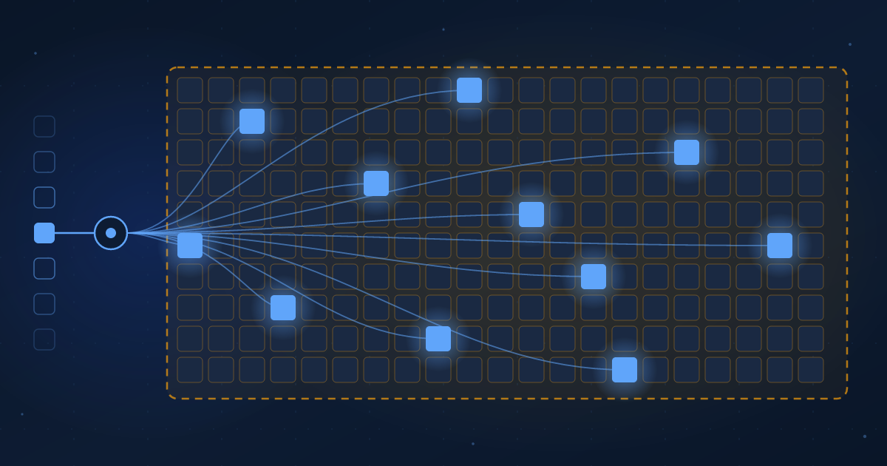

The Active Parameter
A sparse model has two sizes. One sets what you pay per token, the other sets what you must buy before the first token.
Ibrahim AbuAlhaol, PhD, P.Eng., SMIEEE
AI Technical Lead
The biggest number on a model card is not the one that sets your bill per token. It is the one that sets your bill before the first token arrives.
Two releases last week made that split hard to miss. On October 5, Reflection AI announced Beam, a 501 billion parameter model that runs 23 billion of them for any given token [1]. On October 6, Mistral opened a public preview of Mistral Large 4, a model of about one trillion parameters (1.05 trillion on its model card) that runs 52 billion, plus a 1.6 billion parameter vision encoder [2][3]. Both are sparse mixture-of-experts models. In plain terms, a mixture-of-experts model is built from many specialist blocks, called experts, and a small router that picks a handful of them for each token. The other experts sit idle for that token. They are still there. They are just not working. The design goes back to Shazeer and colleagues in 2017 [6], was scaled up by the Switch Transformer in 2021 [7], and became the familiar shape of a frontier open model when DeepSeek-V3 shipped 671 billion total with 37 billion active in late 2024 [8].
That design gives one model two honest sizes, and the two sizes answer different questions. The active count answers "what does one token cost me to compute". The total count answers "what do I have to keep in memory to compute anything at all". Most headlines report the total, most price lists reflect the active, and most buyers read only one of them.
A sparse model has two sizes. The active size is what you pay per token. The total size is what you must hold before the first token. Only one of them is in the headline.
What the active count buys you
Compute per token scales with the parameters that run, not the parameters that exist. Reflection says so in its own announcement: its efficiency chart estimates the cost of an answer as roughly two times the active parameters times the number of generated tokens [1]. That formula is what sits behind the company's headline claim that Beam matches GLM-5.2 on reasoning benchmarks with three to four times less inference compute. The claim has not been checked outside the company. The arithmetic behind it is standard, and it is the arithmetic you should use.
Run it for the two models. A token through Beam costs about 46 billion floating point operations. A token through Mistral Large 4 costs about 104 billion. A dense model with Mistral's full parameter count would cost about 2.1 trillion per token, twenty times more. Per token, the sparse model behaves like a mid-sized model, and the API price reflects that. Mistral lists the preview at $1.36 per million input tokens and $4.18 per million output tokens [2], a price that no dense model of that size could carry.
What the total count costs you
The router chooses experts one token at a time, and you cannot know in advance which experts the next token will need. So every expert has to be resident in GPU memory before inference starts. Sparsity cuts the work per token. It does not cut the weights you have to store. The memory floor for a sparse model is set by the total count, exactly as it would be for a dense model of the same size.
The arithmetic is short enough to do by hand. Memory for the weights is the total parameter count times the bytes per parameter, and the bytes depend on the precision of the checkpoint you run.
memory for weights = total parameters x bytes per parameter
Beam 501B x 2 bytes (16-bit) = 1.0 TB
501B x 1 byte (8-bit) = 0.5 TB
Mistral Large 4 1,050B x 2 bytes (16-bit) = 2.1 TB
1,050B x 1 byte (8-bit) = 1.05 TB
compute per generated token ~ 2 x active parameters
Beam 2 x 23B = 46 GFLOP per token
Mistral Large 4 2 x 52B = 104 GFLOP per token
dense 1,050B 2 x 1,050B = 2,100 GFLOP per tokenThose figures are the weights alone. The working memory for context (the KV cache), activations and the serving runtime typically adds another 20 to 40 percent, and the context windows these models advertise (one million tokens for both) make that overhead grow with every concurrent user. Neither vendor had published its checkpoint precision at the time of writing, so treat every row as a floor. For scale, an NVIDIA H100 holds 80 GB and an H200 holds 141 GB [4][5]. Beam at 8-bit fits one eight-GPU H100 node with little room to spare. Mistral Large 4 at the same precision needs two.
Two buyers, two prices
Here is why the confusion survives. The two prices land on two different buyers.
If you call the model through an API, you only ever see the active price. The provider holds the full set of experts in memory and spreads that standing cost across every customer in the queue. A sparse model is a good deal for you, and the total count is trivia.
If you host the model yourself, which is the whole point of an open-weight release, you pay the total price first, in GPUs you have to buy or rent before the first request, and you earn the active discount only as the machine fills up. A sparse model on a half-idle node is a large model with a large bill and a small amount of work done. The discount is real, but it is a discount on utilization, and it belongs to whoever keeps the hardware busy.
This is also why a 23 billion active model and a 23 billion dense model are not interchangeable on your own hardware, even though they cost about the same per token. The dense model fits one GPU. Beam needs a node. Same running cost, very different standing cost.
Reading a model card in the right order
The fix is a reading order, not a new metric. When a sparse model lands on your desk, read the card in this sequence and write each number down before moving to the next.
- Total parameters, then the precision of the released checkpoint. Multiply them. That is your memory floor, and it decides whether the model fits a GPU, a node or a rack.
- Active parameters. Double them. That is your compute per generated token, and it decides your cost per answer once the hardware is busy.
- Context length, and how much of it your workload will use. Memory for context grows with every concurrent request, and the one million token figure on both cards is a ceiling, not a free allowance.
- Which of the numbers above came from a measurement you can repeat, and which came from the vendor's chart. For both of this week's models the weights are promised for later in the month, so every benchmark is still a claim. That problem deserves its own article, and it gets one next.
Do this once and the headline number stops misleading you. "One trillion parameters" is a statement about memory. "Fifty-two billion active" is a statement about compute. Both are true, and neither one is the price.
Conclusion
Dense models trained us to read one number, because in a dense model the count of parameters that exist and the count that work are the same. Sparse models broke that habit without telling anyone. The vendors are not hiding anything; both figures sit in the first paragraph of both announcements. The failure is on the reading side. The big number gets quoted for capability, the small number gets quoted for cost, and nobody adds up what it takes to run the thing in a room you control.
Expect every frontier open model to arrive with two sizes from now on. The gap between them will keep widening, because routing is now the cheapest way to add capability, and the gap is exactly where the hosting bill hides.
What leaders should do
- Require two numbers on every model proposal that crosses your desk: memory to hold the weights at the planned precision, and compute per token from the active count. Send back a proposal that reports only the total.
- Decide which buyer you are before you pick the model. API consumption buys the active price with no standing cost. Self-hosting buys the total price up front and recovers the sparse discount only at high utilization, so put a utilization target in the business case.
- Budget context memory as its own line item. The advertised window is a ceiling. Size for the context length your workload uses, times concurrent requests, on top of the weights.
- Hold the hardware order until the checkpoint precision is published. A model that ships at 8-bit halves the memory floor against a 16-bit assumption, and for these two models the difference is a whole node.
Related Articles
References & Extended Literature
- Reflection AI. (2026, October 5). "Introducing Beam: Reflection's 501B open-weight model." Reflection AI Blog. https://reflection.ai/blog/introducing-beam
- Mistral AI. (2026, October 6). "Mistral Large 4." Mistral AI News. https://mistral.ai/news/mistral-large-4
- Mistral AI. (2026). "Mistral Large 4" model page (52B active, 1.05T total, 1.6B vision encoder, 1M context, public preview v26.10). Mistral Docs. https://docs.mistral.ai/models/mistral-large-4-0
- NVIDIA. "NVIDIA H100 Tensor Core GPU" (80 GB HBM3). Product page. https://www.nvidia.com/en-us/data-center/h100/
- NVIDIA. "NVIDIA H200 Tensor Core GPU" (141 GB HBM3e). Product page. https://www.nvidia.com/en-us/data-center/h200/
- Shazeer, N., Mirhoseini, A., Maziarz, K., et al. (2017). "Outrageously Large Neural Networks: The Sparsely-Gated Mixture-of-Experts Layer." ICLR 2017. https://arxiv.org/abs/1701.06538
- Fedus, W., Zoph, B., Shazeer, N. (2021). "Switch Transformers: Scaling to Trillion Parameter Models with Simple and Efficient Sparsity." JMLR 23 (2022). https://arxiv.org/abs/2101.03961
- DeepSeek-AI. (2024). "DeepSeek-V3 Technical Report" (671B total, 37B active). arXiv:2412.19437. https://arxiv.org/abs/2412.19437